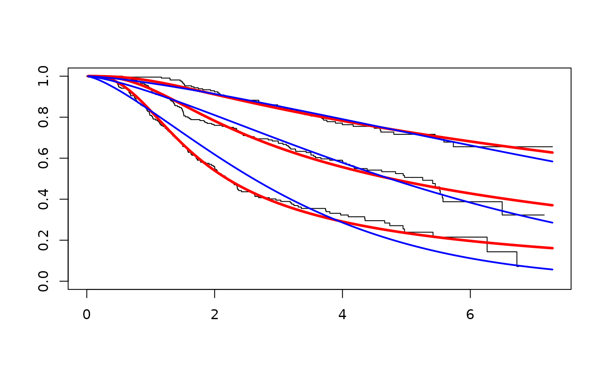

Flexible survival regression using the Royston/Parmar spline model.
Source:R/spline.R
flexsurvspline.RdFlexible parametric modelling of time-to-event data using the spline model of Royston and Parmar (2002).
Usage
flexsurvspline(
formula,
data,
weights,
bhazard,
rtrunc,
subset,
k = 0,
knots = NULL,
bknots = NULL,
scale = "hazard",
timescale = "log",
spline = "rp",
...
)Arguments
- formula
A formula expression in conventional R linear modelling syntax. The response must be a survival object as returned by the
Survfunction, and any covariates are given on the right-hand side. For example,Surv(time, dead) ~ age + sexspecifies a model where the log cumulative hazard (by default, see
scale) is a linear function of the covariatesageandsex.If there are no covariates, specify
1on the right hand side, for exampleSurv(time, dead) ~ 1.Time-varying covariate effects can be specified using the method described in
flexsurvregfor placing covariates on ancillary parameters. The ancillary parameters here are namedgamma1, ...,gammarwhereris the number of knotskplus one (the ``degrees of freedom'' as defined by Royston and Parmar). So for the default Weibull model, there is just one ancillary parametergamma1.Therefore a model with one internal spline knot, where the equivalents of the Weibull shape and scale parameters, but not the higher-order term
gamma2, vary with age and sex, can be specified as:Surv(time, dead) ~ age + sex + gamma1(age) + gamma1(sex)or alternatively (and more safely, see
flexsurvreg)Surv(time, dead) ~ age + sex, anc=list(gamma1=~age + sex)Survobjects oftype="right","counting","interval1"or"interval2"are supported, corresponding to right-censored, left-truncated or interval-censored observations.- data
A data frame in which to find variables supplied in
formula. If not given, the variables should be in the working environment.- weights
Optional variable giving case weights.
- bhazard
Optional variable giving expected hazards for relative survival models.
- rtrunc
Optional variable giving individual right-truncation times (see
flexsurvreg). Note that these models can suffer from weakly identifiable parameters and badly-behaved likelihood functions, and it is advised to compare convergence for different initial values by supplying differentinitsarguments toflexsurvspline.- subset
Vector of integers or logicals specifying the subset of the observations to be used in the fit.
- k
Number of knots in the spline. The default
k=0gives a Weibull, log-logistic or lognormal model, if"scale"is"hazard","odds"or"normal"respectively.kis equivalent todf-1in the notation ofstpmfor Stata. The knots are then chosen as equally-spaced quantiles of the log uncensored survival times, for example, at the median with one knot, or at the 33% and 67% quantiles of log time (or time, see"timescale") with two knots. To override this default knot placement, specifyknotsinstead.- knots
Locations of knots on the axis of log time (or time, see
"timescale"). If not specified, knot locations are chosen as described inkabove. Eitherkorknotsmust be specified. If both are specified,knotsoverridesk.- bknots
Locations of boundary knots, on the axis of log time (or time, see
"timescale"). If not supplied, these are are chosen as the minimum and maximum log death time.- scale
If
"hazard", the log cumulative hazard is modelled as a spline function.If
"odds", the log cumulative odds is modelled as a spline function.If
"normal", \(-\Phi^{-1}(S(t))\) is modelled as a spline function, where \(\Phi^{-1}()\) is the inverse normal distribution functionqnorm.- timescale
If
"log"(the default) the log cumulative hazard (or alternative) is modelled as a spline function of log time. If"identity", it is modelled as a spline function of time, however this model would not satisfy the desirable property that the cumulative hazard (or alternative) should approach 0 at time zero.- spline
"rp"to use the natural cubic spline basis described in Royston and Parmar."splines2ns"to use the alternative natural cubic spline basis from thesplines2package (Wang and Yan 2021), which may be better behaved due to the basis being orthogonal.- ...
Any other arguments to be passed to or through
flexsurvreg, for example,anc,inits,fixedpars,weights,subset,na.action, and any options to control optimisation. Seeflexsurvreg.
Value
A list of class "flexsurvreg" with the same elements as
described in flexsurvreg, and including extra components
describing the spline model. See in particular:
- k
Number of knots.
- knots
Location of knots on the log time axis.
- scale
The
scaleof the model, hazard, odds or normal.- res
Matrix of maximum likelihood estimates and confidence limits. Spline coefficients are labelled
"gamma...", and covariate effects are labelled with the names of the covariates.Coefficients
gamma1,gamma2,...here are the equivalent ofs0,s1,...in Statastreg, andgamma0is the equivalent of thexbconstant term. To reproduce results, use thenoorthogoption in Stata, since no orthogonalisation is performed on the spline basis here.In the Weibull model, for example,
gamma0,gamma1are-shape*log(scale), shaperespectively indweibullorflexsurvregnotation, or (-Intercept/scale,1/scale) insurvregnotation.In the log-logistic model with shape
aand scaleb(as ineha::dllogisfrom the eha package),1/b^ais equivalent toexp(gamma0), andais equivalent togamma1.In the log-normal model with log-scale mean
muand standard deviationsigma,-mu/sigmais equivalent togamma0and1/sigmais equivalent togamma1.- loglik
The maximised log-likelihood. This will differ from Stata, where the sum of the log uncensored survival times is added to the log-likelihood in survival models, to remove dependency on the time scale.
Details
This function works as a wrapper around flexsurvreg by
dynamically constructing a custom distribution using
dsurvspline, psurvspline and
unroll.function.
In the spline-based survival model of Royston and Parmar (2002), a transformation \(g(S(t,z))\) of the survival function is modelled as a natural cubic spline function of log time \(x = \log(t)\) plus linear effects of covariates \(z\).
$$g(S(t,z)) = s(x, \bm{\gamma}) + \bm{\beta}^T \mathbf{z}$$
The proportional hazards model (scale="hazard") defines
\(g(S(t,\mathbf{z})) = \log(-\log(S(t,\mathbf{z}))) =
\log(H(t,\mathbf{z}))\), the
log cumulative hazard.
The proportional odds model (scale="odds") defines
\(g(S(t,\mathbf{z})) \)\( =
\log(S(t,\mathbf{z})^{-1} - 1)\), the log
cumulative odds.
The probit model (scale="normal") defines \(g(S(t,\mathbf{z})) =
\)\( -\Phi^{-1}(S(t,\mathbf{z}))\), where \(\Phi^{-1}()\) is the inverse normal
distribution function qnorm.
With no knots, the spline reduces to a linear function, and these models are equivalent to Weibull, log-logistic and lognormal models respectively.
The spline coefficients \(\gamma_j: j=1, 2 \ldots \), which are called the "ancillary parameters" above, may also be modelled as linear functions of covariates \(\mathbf{z}\), as
$$\gamma_j(\mathbf{z}) = \gamma_{j0} + \gamma_{j1}z_1 + \gamma_{j2}z_2 + ... $$
giving a model where the effects of covariates are arbitrarily flexible functions of time: a non-proportional hazards or odds model.
Natural cubic splines are cubic splines constrained to be linear beyond boundary knots \(k_{min},k_{max}\). The spline function is defined as
$$s(x,\bm{\gamma}) = \gamma_0 + \gamma_1 x + \gamma_2 v_1(x) + \ldots + $$$$ \gamma_{m+1} v_m(x)$$
where \(v_j(x)\) is the \(j\)th basis function
$$v_j(x) = (x - k_j)^3_+ - \lambda_j(x - k_{min})^3_+ - (1 - $$$$ \lambda_j) (x - k_{max})^3_+$$
$$\lambda_j = \frac{k_{max} - k_j}{k_{max} - k_{min}}$$
and \((x - a)_+ = max(0, x - a)\).
References
Royston, P. and Parmar, M. (2002). Flexible parametric proportional-hazards and proportional-odds models for censored survival data, with application to prognostic modelling and estimation of treatment effects. Statistics in Medicine 21(1):2175-2197.
Wang W, Yan J (2021). Shape-Restricted Regression Splines with R Package splines2. Journal of Data Science, 19(3), 498-517.
Jackson, C. (2016). flexsurv: A Platform for Parametric Survival Modeling in R. Journal of Statistical Software, 70(8), 1-33. doi:10.18637/jss.v070.i08
See also
flexsurvreg for flexible survival modelling using
general parametric distributions.
plot.flexsurvreg and lines.flexsurvreg to plot
fitted survival, hazards and cumulative hazards from models fitted by
flexsurvspline and flexsurvreg.
Examples
## Best-fitting model to breast cancer data from Royston and Parmar (2002)
## One internal knot (2 df) and cumulative odds scale
spl <- flexsurvspline(Surv(recyrs, censrec) ~ group, data=bc, k=1, scale="odds")
## Fitted survival
plot(spl, lwd=3, ci=FALSE)
## Simple Weibull model fits much less well
splw <- flexsurvspline(Surv(recyrs, censrec) ~ group, data=bc, k=0, scale="hazard")
lines(splw, col="blue", ci=FALSE)

## Alternative way of fitting the Weibull
if (FALSE) {
splw2 <- flexsurvreg(Surv(recyrs, censrec) ~ group, data=bc, dist="weibull")
}